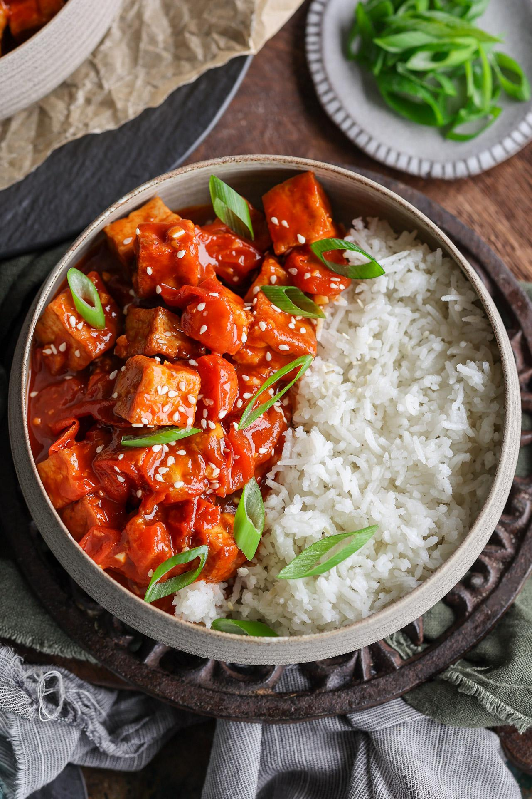

Home
Gochujang Tomato Tofu | By PickUpLimes

Description
Super flavorful, spicy, umami and slightly sweet recipe. It is also quick to prepare!
Full description, ingredient quantities and instructions available at PickUpLimes website.
Ingredients:
- White rice
- Vegetable oil
- Firm tofu
- Gochujang
- Garlic
- Reduced-sodium soy sauce
- Light brown sugar
- Cherry tomatoes
Preparation steps:
- Cook the rice.
- Meanwhile, heat the oil in a sauté pan over medium heat and cook the cubed tofu until golden on all sides.
- Mix gochujang, minced garlic, soy sauce and sugar in a bowl for the sauce.
- When tofu is golden, transfer to a plate. Cook the halved tomatoes on the now empty pan.
- Add the sauce and cook for about 3 minutes.
- Stir in the tofu, then serve with warm rice.